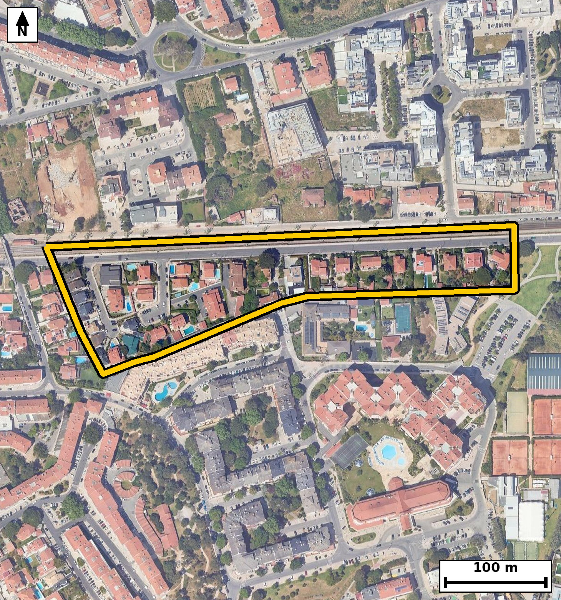

nº695
nº7
nº653
nº761
nº331
Pct. General Eduardo
Galhardo
R. Almirante Matos
Moreira
Av. General Eduardo
Galhardo
Pct. Infante Dom Henrique
R. Fernão de Magalhães
R. de Moçamedes
R. Professor António
Augusto Faria da Silva
Av. Wenceslau Balseiro
Guerra
R. de Malange
R. Pedro Álvares Cabral
R. de Luanda
Pct. Doutor Artur De
Azevedo Rua
R. Luís Marques
R. Padre José Baptista da
Silva
Av. da República
R. Infante Dom Henrique
R. do Bié
Pct. Pero da Covilhã
Pct. José Figueiredo da
Fonseca
![Código QR para abrir no Google Maps]()